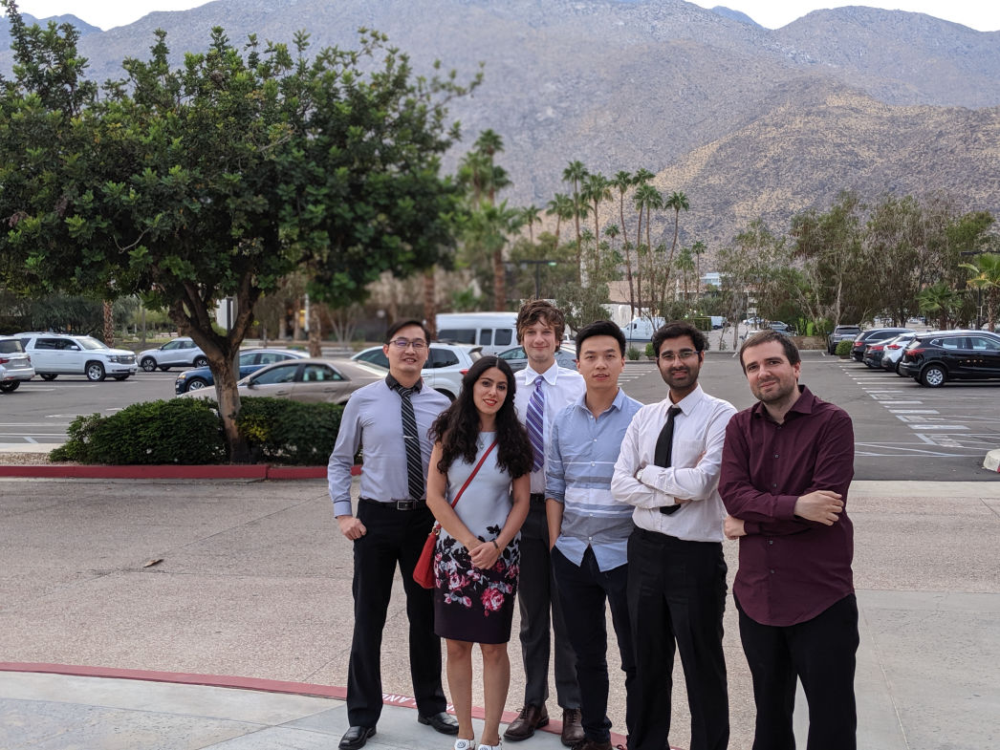

S. Sensale, C. Wang and H.-C. Chang. “Characterization of Exosomes and Nanoparticles Using Biphasic Nanopore Resistive Signals”. SciX 2019, Palms Springs, CA, October 2019. (Poster presentation)
S. Sensale, Z. Peng and H.-C. Chang. “Non-Equilibrium Ionic Charging and Discharging During Molecular Translocation Through Nanopores: A Non-Equilibrium Capacitive Spectral Assay for Single Molecules”. APS March Meeting, Boston, MA, March 2019. (Oral presentation)
S. Sensale, Z. Peng and H.-C. Chang. “Elastic Properties of DNA as a Pointer of Phase Transitions”. U.S. National Congress for Theoretical and Applied Mechanics, Chicago, IL, June 2018. (Oral presentation)
S. Sensale, Z. Peng and H.-C. Chang. “Different solid-state nanopore translocation dynamics and times of dsDNA and ssDNA”. APS March Meeting, Los Angeles, CA, March 2018. (Oral presentation)
S. Sensale, Z. Peng and H.-C. Chang. “The contribution of vibrational entropy to DNA melting kinetics”. Midwest Thermodynamics and Statistical Mechanics Conference, Notre Dame, IN, June 2017. (Oral presentation)
S. Sensale, Z. Peng and H.-C. Chang. “Dynamic coarse-graining of dna melting kinetics: Enthalpic and entropic effects of cooperative base-pair dynamics”. APS March Meeting, New Orleans, LA, March 2017. (Oral presentation)

Graduate Students and Postdocs from Dr. Chang's Group at SciX 2019, Palms Springs, CA, October 2019